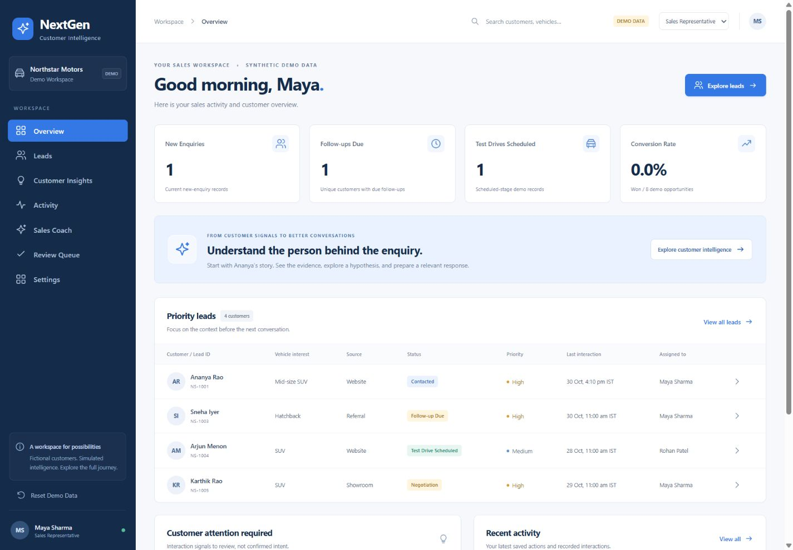

Sales representative
“What does this customer need, what changed, and how should I prepare?”
Needs a persistent history, open concerns, commitments and relevant talking points.
PRODUCT STRATEGY / AI-NATIVE CRM
A CRM that remembers the conversation.
And helps the team make its next decision.
An automotive sales workspace connecting persistent customer context, evidence-linked guidance, opportunity governance and continuous learning.

Genuine prototype interface · fictional customer data · simulated intelligence
A functional React prototype with persistent journeys, drafts, follow-ups, decision review and coaching. No live AI inference, recording, messaging or production integrations. Architecture, AI evaluations and rollout plans are proposed.
Customer requirements, objections and commitments emerge across enquiries, visits, test drives and calls. When this context stays fragmented, representatives repeat questions, follow up without context and make opportunity decisions that are difficult to explain. Managers see activity totals without a clear account of why customers progress or disengage.
Product thesis: make the customer journey—not the isolated activity—the unit of intelligence.
“What does this customer need, what changed, and how should I prepare?”
Needs a persistent history, open concerns, commitments and relevant talking points.
“Which decisions need review, and what can the team learn?”
Needs traceable opportunity decisions, recurring feedback and reviewed coaching.
These are design personas and reconstructed task needs, not quotes from customer interviews. The assessment uses a fictional dealership and eight synthetic customers.
Language models could extract requirements, interpret objections and prepare context-aware guidance across varied conversations. Retrieval would supply customer history and approved dealership knowledge. Deterministic rules still govern permissions, timestamps, state transitions, validation and approvals.
The prototype simulates intelligence with predefined scenarios. Real transcription, retrieval and model inference belong to the proposed production system.
| Business KPI | Definition | Why it matters |
|---|---|---|
| Preparation time | Median time to retrieve context and prepare the next conversation. | Tests whether intelligence removes work from the representative’s day. |
| Weekly active adoption | Eligible pilot representatives using the core workflow each week ÷ eligible pilot representatives. | Shows whether the workflow becomes part of normal practice. |
| Follow-up completion | Due follow-ups completed within the agreed window ÷ follow-ups due. | Connects commitments to consistent execution. |
| Opportunity progression | Eligible opportunities progressing in a defined observation window ÷ eligible opportunities. | Assesses funnel movement while accounting for stage and cohort. |
| Won conversion | Won opportunities ÷ opportunities in a defined cohort. | Measures commercial value; attribution needs a controlled pilot. |
Proposed pilot measures. No production baseline, uplift or target achievement is claimed. Demo conversion uses eight synthetic opportunities and is not business evidence.
First validate that representatives can find the right context, prepare relevant guidance and complete a follow-up without losing history. Validate that managers can resolve an evidence conflict and publish a reviewed playbook. Establish baseline task times and agree quality thresholds before recruiting a live pilot.
Critical workflow requirements: permission denial blocks simulated transcript processing; status changes require explicit supported confirmation or manager resolution; saved records survive refresh. These are functional criteria, distinct from proposed business targets.
| Layer | Proposed measure | Product decision it supports |
|---|---|---|
| Extraction | Field precision/recall and evidence-reference correctness against labelled transcripts. | Which fields are safe to propose and which require review. |
| Retrieval & guidance | Relevant-context coverage, groundedness, unsupported-claim rate and preparation-task completion. | Whether retrieval, prompts or catalogue coverage need improvement. |
| Opportunity governance | Reviewer agreement, correction rate, escalation rate and time to resolve conflict. | Where approval policies need adjustment. |
| Business insights | Reason classification, unique-customer coverage, unknown-reason coverage and cluster consistency. | Whether an apparent pattern warrants investigation. |
| Operations | End-to-end latency, cost per completed task, failure and retry rates. | Whether the workflow is usable and economical. |
Software checks verify rules and persistence. They do not establish model accuracy. LangSmith and Azure Monitor are proposed tools, not implemented integrations.
Core user story: As a sales representative, I need the customer’s previous concerns, preferences and commitments alongside evidence-linked guidance so I can continue the conversation without restarting discovery.
Functional requirements: append interactions to one customer journey; retain concern history; separate observed facts from hypotheses; use approved product knowledge; save channel-specific drafts; capture outcomes; route disputed opportunity changes for review.
Non-functional requirements for production: tenant isolation, server-side authorization, retention controls, versioned context, bounded retries and auditable approval. The local prototype does not provide these production controls.
Phone and Zoom flows demonstrate permission and processing states using simulated sessions. Nothing is recorded or sent. The MVP prioritises a single dealership or small pilot; channel synchronisation and autonomous messaging are outside scope.
React + TypeScript + Vite. Synthetic customer records, deterministic intelligence, browser localStorage, editable drafts, follow-ups, review queue, coaching and audit demonstrations.
Authenticated capture adapters → permission policy → FastAPI and durable queue → Azure Speech and Blob → PostgreSQL and scoped retrieval → Azure OpenAI with LangGraph → human review → approved transaction.
Four proposed agents cover customer intelligence, conversation guidance, opportunity governance, and business insights with coaching. Workflow checkpoints are separate from customer records. The model does not receive unrestricted CRM write or customer-send access.
Explore the architecture ↗| Priority | Capability | State |
|---|---|---|
| P0 | Persistent journey, concern history, drafts, tasks and evidence navigation. | Implemented locally. |
| P0 | Permission gates and opportunity review with required rationale. | Simulated workflow implemented. |
| P1 | Distinct-customer insights and reviewed playbook publishing. | Implemented with synthetic examples. |
| P0 for live pilot | Identity, tenancy, real capture, permission service, storage and deletion. | Proposed engineering work. |
| P1 for live pilot | Transcription, scoped RAG, agent orchestration and labelled evaluation. | Proposed engineering work. |
The engineering proposal sets out 60 working days across eight phases, with eight core team members and two shared specialists. This is a planning artefact, not a completed production rollout.
The project’s 1 November verification report records 98 software checks passed, TypeScript validation and a production build. Coverage includes permission guards, persistence, evidence-linked decisions, conflicting proposals, manager rationale and state validation.
Browser checks documented phone decline/permission, Zoom withdrawal, refresh recovery, opportunity conflict resolution, coaching publication and responsive layouts. These checks use synthetic scenarios; no live model was evaluated.
Customer: “I like the vehicle. I want to discuss the EMI with my family. Please call me on Friday.”
Expected: retain continued interest and propose Follow-up Required. Do not infer rejection. A conflicting proposal must preserve the current approved record and request review.
Next, build a held-out labelled conversation set, use independent reviewers, examine disagreement and test missing evidence, noisy speech, contradictory context and prompt injection.
Before a live pilot: validate capture-provider permissions; approve recording and processing policies; implement tenant isolation, authorization and retention; verify deletion propagation; establish labelled evaluation thresholds; test retry/replay and stale approvals; assign support and rollback owners.
Start with representative-reviewed suggestions. Keep manual notes and the previous approved state available if processing fails. The current public release is the browser prototype—not a production CRM launch.
Proposed pilot monitoring combines sampled human review of extracted evidence and guidance with correction rate, unsupported-answer incidents, latency, cost, failed processing and approval conflicts. Investigate errors by context, prompt and model version.
Compare preparation-task completion and time against the existing workflow. Use a staged rollout before considering a controlled experiment. Do not infer conversion impact from a small usability sample. No production online-evaluation results are available.
Track weekly adoption, follow-up completion, preparation time and opportunity progression by representative cohort and customer stage. Report observation windows, sample sizes and unknown outcomes. Evaluate conversion only when the cohort is mature enough and confounding factors are addressed.
Keep customer-stated reasons separate from manager interpretations. Recurring feedback is a signal for investigation, not proof of why a sale was lost.
The demonstrated loop carries new interactions and outcomes into the same customer record, updates open concerns and preserves prior evidence. Cross-customer patterns inform investigation; successful conversations can inspire playbooks that managers review before publication.
Product learning: trustworthy intelligence depends on memory, provenance and decision ownership as much as on generation quality. The next priority is validating the workflow with real representatives and a labelled dataset before expanding channels or autonomy.
EXPLORE THE EVIDENCE
LET’S BUILD CUSTOMER VALUE